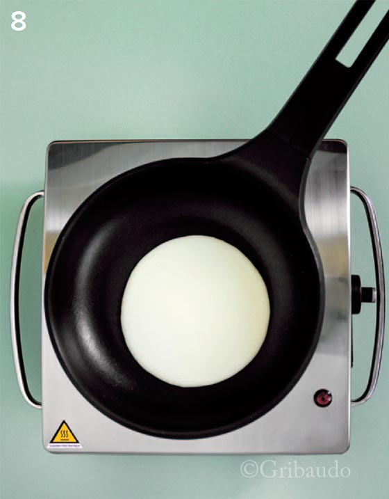
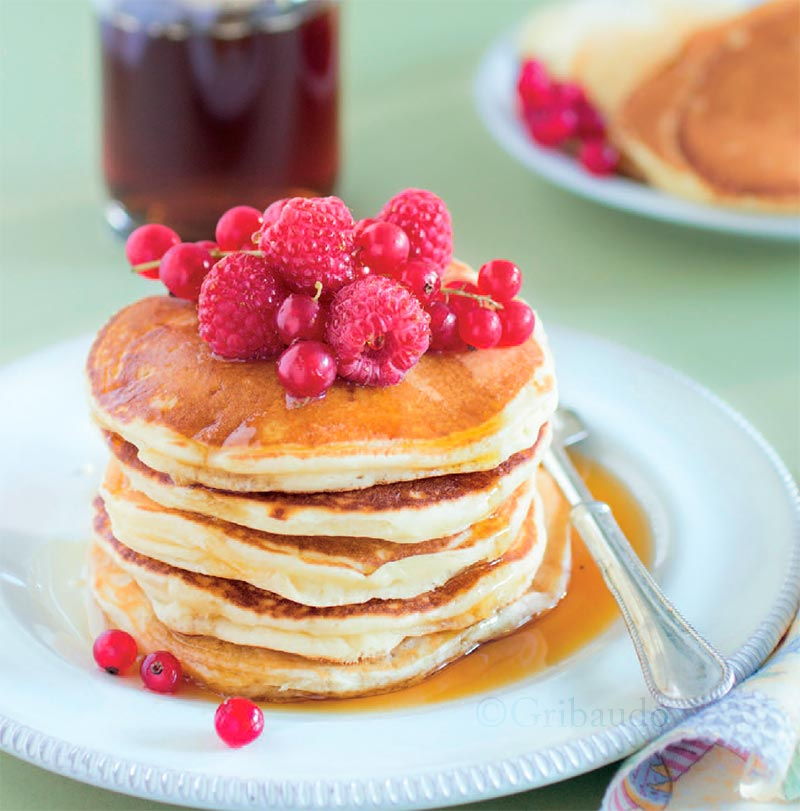

Curry
Ingredienti
Farina
200g
Backpulver
1 bustina
Zucchero
50g
Latte (Buttermilch)
350ml
Succo di limone o Yogurt
1 cucchiaio
Uova
2
Burro
45g
Sale
1 pizzico
Procedimento
1- La ricetta americana prevede il buttermilk: quel liquido che rimane dopo aver preparato il burro a partire dalla panna. Il latticello è spesso un prodotto diverso perché in US viene fatto fermentare diventando simile ad uno yogurt molto liquido. Come alternativa faccio cagliare il latte col limone, lasciandolo a riposo per 15 minuti.
2 – Separate i tuorli e montate gli albumi. Unite gli albumi montati al latte.
3 - Sciogliete il burro e quando è intiepidito aggiungetelo al tuorlo. Inizialmente solo un goccio, mentre lavorate di frusta per evitare di coagulare il tuorlo. A poco a poco aggiungetelo tutto.
4 – Versate la miscela di tuorlo e burro nel latte.
5 – Versate il liquido (latte+albume+burro+tuorlo) nella farina a cui avrete aggiunto un pizzico di sale per esaltare i sapori, e lo zucchero. Siamo arrivati al punto cruciale: mescolate il minimo indispensabile, non più di 10 secondi. Non dovete cercare di eliminare tutti i grumi: spariranno poi. Se mescoliamo troppo comincerà a formarsi il glutine che cambierà la consistenza dei nostri pancake.
6 – Lasciate riposare almeno 30 minuti, per dar modo al lievito di cominciare ad agire. Potete anche preparare la miscela la sera, metterla in frigorifero e utilizzarla per la colazione della mattina successiva.
7 – Ora riscaldate la padella. La temperatura è giusta quando, buttando qualche goccia di acqua, questa comincia a vagare in giro sfrigolando. Se si vaporizza istantaneamente la temperatura è troppo alta.

8 – Versate un mestolino alla volta. Non troppo altrimenti non riuscirete a girare il pancake senza romperlo.
9 – Dopo poche decine di secondi, quando la parte inferiore sarà brunita girate il pancake.

10 – Poche decine di secondi di cottura anche dall’altro lato e il pancake è pronto per essere innaffiato di sciroppo d’acero e mangiato. Se volete potete anche surgelarli.